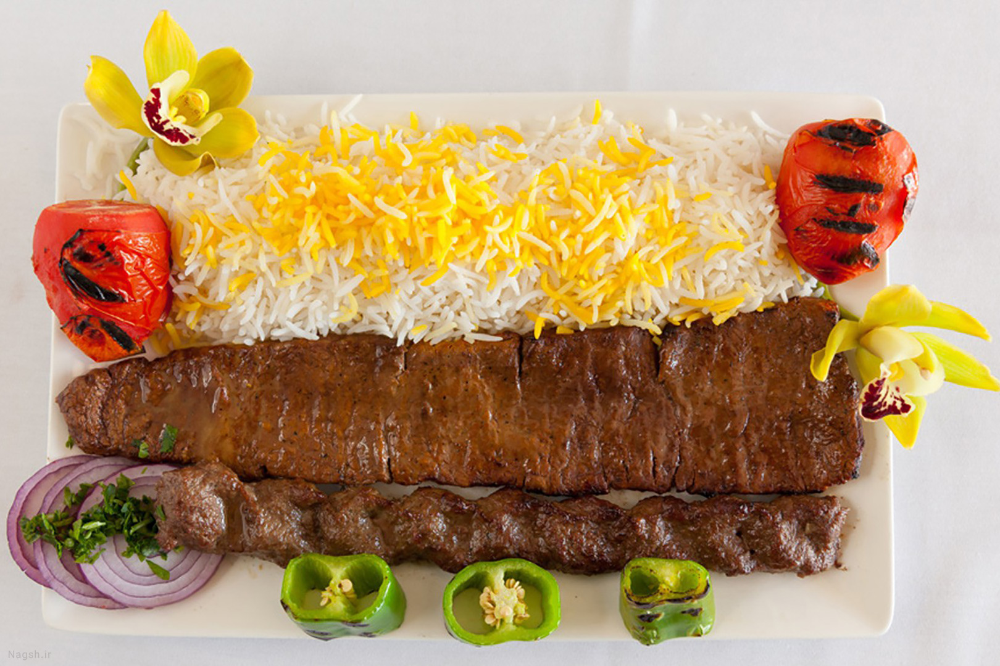
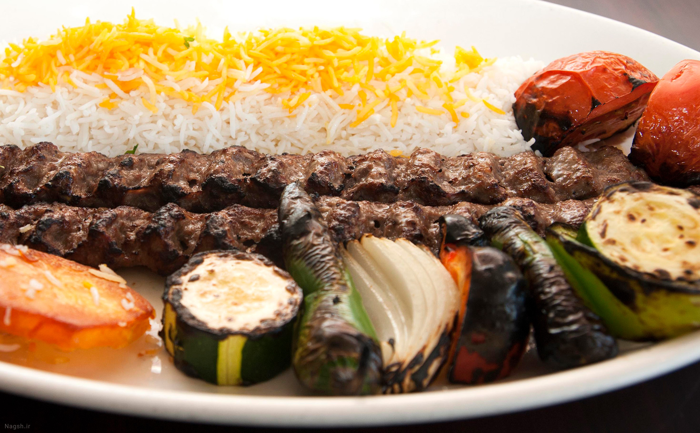
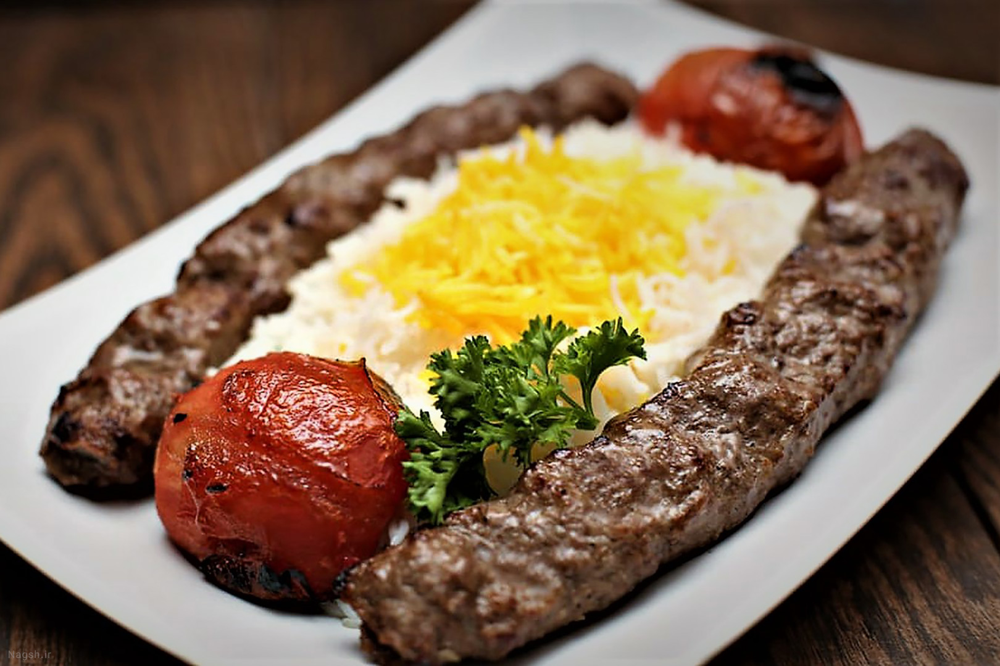

Koobide
Kabab koobideh is grilled on wide, flat skewers, traditionally over hot coals, and is served with chelow (plain white rice with oil, salt and saffron), accompanied by grilled tomatoes and onions. Sumac is usually served as a tableside garnishing spice.


